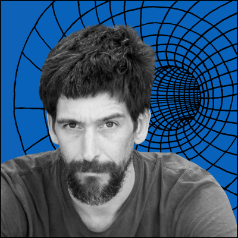
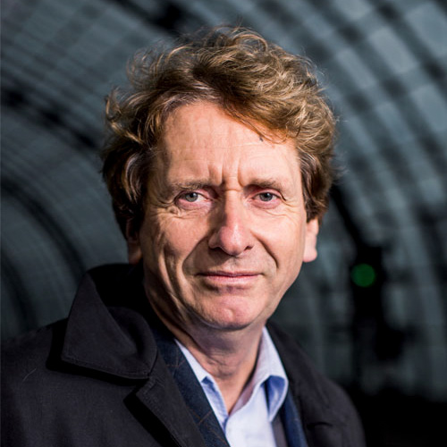

May 11-12, 2019
Sustainability by Design Conference
Baltimore, MD | Mt. Washington Conference Center
What is Our Mission?
The Sustainable By Design Conference aims to define sustainable design, understanding that sustainability pertains to the environment, social welfare, and economic welfare. We will reevaluate current design practices in the context of our ourselves, our communities, and the natural world. We hope to address pressing issues related to the way in which our world is currently heading and offer practical design solutions and goals to change our path towards a more sustainable one. This conference will also allow us to open up a dialogue and work together to find better solutions in making the design world, and the rest of the world, more sustainable.
Who should come?
Of course, anyone is welcome to come and learn sustainabile design if that if your passion. We believe every designer should be informed about sustainability, and the cost of our actions if we continue designing in the way we design now. Sustainanbility should be on every designer's mind before they begin a project whether you are a graphic designer, fashion designer, or a product designer; it's all relevant. It is also important to hear from a variety of practicers and perspectives from every field, because believe it or not, a lot of fields of design are interconnected; it is important to learn about their practices moving forward in the age of our ever changing climate and economy.
What Are People Saying?
"From top to bottom the speakers and topics were carefully curated. The execution was flawlessly organized. I made so many connections. Professional development has never been so fun."
- Douglas Davis, Creative Strategist -
Speakers
- Maxine Bedat
- Executive Director at New Standard Institute
- Founder and director of the New Standard Institute. She co-founded the fashion brand, Zady, focusing on sustainable practices with the best materials, low environmental footprints, fair labor, and style. Zady was named of the world’s “Most Innovative Companies” in retail.
- 
- Kris De Decker
- Freelance Journalist & Creator of Low-Tech Magazine
- Founder of the fully solar powered website running from a server on the roof of his apartment in Barcelona. The solar panel powers the battery to the server, and there is an icon on the site that shows users how much energy is left in the battery. This website has about 3 days a month where it actually shuts off because of the nature of solar power. This is a recent innovation, and has been widely talked about recently.
- 
- Michael Braungart
- Chemist and Author
- Author of the book Cradle to Cradle and The Upcycle: Beyond Sustainability--Designing for Abundance. Michael believes in redesigning industrial production to create a circular economy in which everything being made either gets reused into something else or goes back into the earth. They believe this is the way designers need to work in the future in order to keep humanity alive.
Schedule
Friday, May 9th
8:00am
8:00-9:00am
Packet Pick-up and Coffee Social
Come to the table to get your conference materials. Get to know your colleagues and speakers while enjoying breakfasy and coffee.
9:00am
9:00-9:30am
Welcome and Briefing
Join us in the main conference room to be welcomed and get a glimpse of what the weekend will look like.
9:30am
9:30-11:00am
Talk: Reimagining Our Capitalist Economy
Michael Braungart will give us a new goal to imagine for the future of our capitalist economy. How our capitalist economy got to be where it is today, what will need to change, how will we have to adapt, what we we do now. Michael will look more closely at the cost of our choices today, and where that will lead if nothing is to change. He will also look at real examples of product design that either unsuccessfully or successfully became sustainable.
11:00am
11:00am-12:00pm
Group Discussion
We will break out into our designated small groups and hold discussions about the talk led by our discussion leaders.
12:00pm
12:00-2:00pm
Lunch Break
Enjoy a full two hours for a lunch break out on the town. We do not provide lunch.
2:00pm
2:00-3:00pm
Workshop One
3:00pm
3:00-4:30pm
Reevaluating Fast Fashion
Maxine Bedat explains the fast fashion culture and how it negatively impacts ourselves, workers, and the environment. Looking at her personal story, company, and current practices, she will explore what a more sustainable fashion culture would look like and how companies and people alike will have to change their attitude and behavior to meet these standards.
4:30pm
4:30-5:30pm
Group Discussion
We will break out into our designated small groups and hold discussions about the talk led by our discussion leaders.
5:30pm
5:30-6:00pm
30 Minute Break
6:00pm
6:00-9:00pm
After Party
Enjoy dinner, drinks, and dancing in the main hall
Saturday, May 10th
8:00am
8:00-9:00am
Breakfast and Connect
Buffet breakfast and coffee with your colleagues and speakers
9:00am
9:00-9:30am
Day Two Welcome
Join us in the main conference room for our second day briefing
9:30am
9:30-11:00am
Talk: Sustainable Design
We will look at current design practices in relation to the theory of entropy and offer more enviornmentally, socially, and economically sound solutions. What are ways in which printed media, webdesign, logos, package design, and more can become more sustainable? We will also look more philosophically at our design practices to see where we can reduce and question what projects and design practices are worth exploring in helping sustain the earth’s natural world. In addition, we will examine open sources, their benefit, and ways we can use them.
11:00am
11:00am-12:00pm
Group Discussion
We will break out into our designated small groups and hold discussions about the talk led by our discussion leaders.
12:00pm
12:00-2:00pm
Lunch Break
2:00pm
2:00-3:00pm
Workshop Two
3:00pm
3:00-4:30pm
Talk: Ecotech Myths and Lessons from the Past
The present-day approach towards a sustainable society is doomed to fail. The focus on sophisticated technology – electric and hybrid cars, energy-efficient devices, solar panels and wind turbines, for instance – has little or no effect because these green technologies require large amounts of energy and resources for their manufacture, which makes their development highly dependent on a continuous supply of fossil fuels. What we need to solve our problems is exactly the opposite: less sophisticated technology. There is a lot to learn from the past. While they often worked surprisingly good, most of low-tech solutions have been completely forgotten. In his speech, Kris de Decker explains that reverting to past technologies does not mean that we should go back to the Middle Ages. Rather, it means combining old tech with new knowledge and new materials, or applying old concepts and lost knowledge to modern technology.
4:30pm
4:30-5:30pm
Group Discussion
We will break out into our designated small groups and hold discussions about the talk led by our discussion leaders.
5:30pm
5:30-6:00pm
30 Minute Break
6:00pm
6:00-9:00pm
Closing Party
Enjoy dinner, drinks, and dancing in the main hall for the closing confernce party